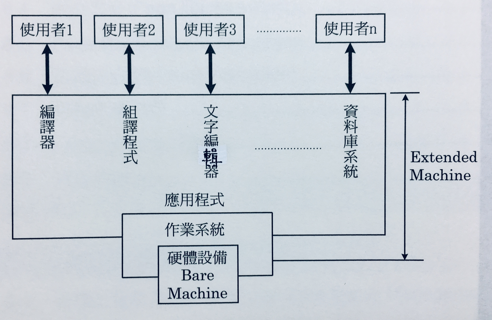
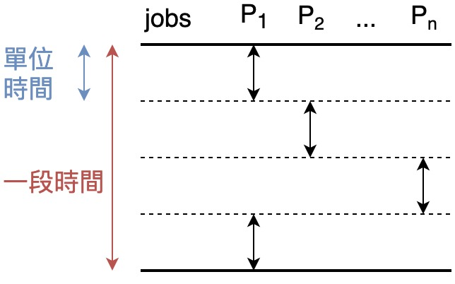
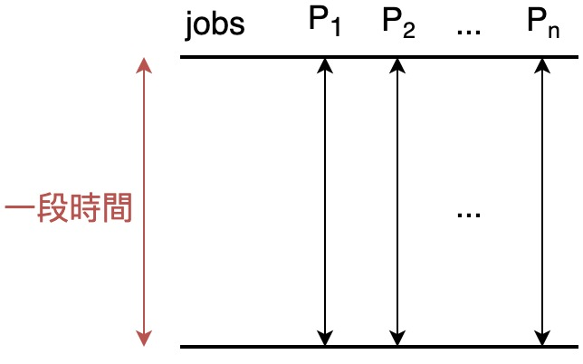
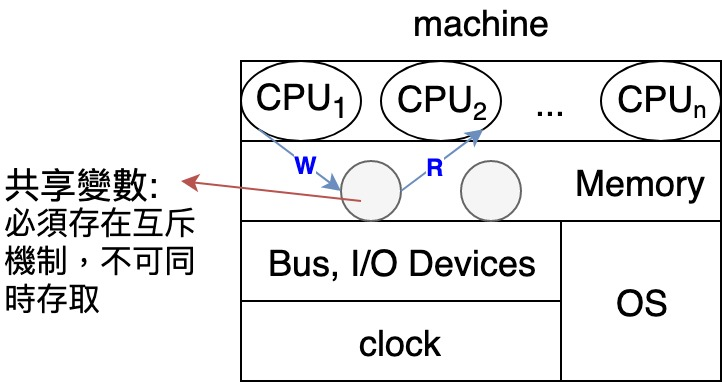
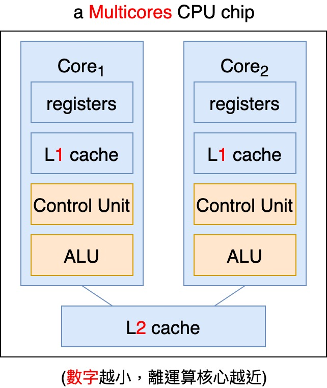
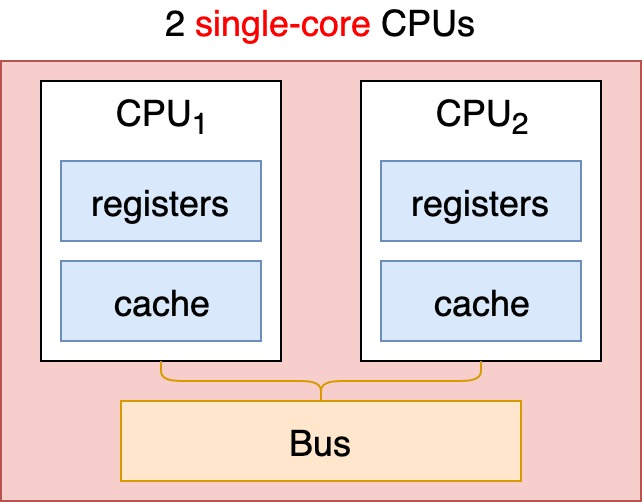

<!DOCTYPE HTML>
<html lang="zh-tw" >
    <head>
        <meta charset="UTF-8">
        <meta content="text/html; charset=utf-8" http-equiv="Content-Type">
        <title>01. 作業系統及 System Types 介紹 · Prepare CSE Master Cheatsheet</title>
        <meta http-equiv="X-UA-Compatible" content="IE=edge" />
        <meta name="description" content="">
        <meta name="generator" content="GitBook 3.2.3">
        <meta name="author" content="saberLiou <saberliou@gmail.com>">
        
        
    
    <link rel="stylesheet" href="../gitbook/style.css">

    
            
                
                <link rel="stylesheet" href="../gitbook/gitbook-plugin-toggle-chapters/toggle.css">
                
            
                
                <link rel="stylesheet" href="../gitbook/gitbook-plugin-splitter/splitter.css">
                
            
                
                <link rel="stylesheet" href="../gitbook/gitbook-plugin-pageview-count/plugin.css">
                
            
                
                <link rel="stylesheet" href="../gitbook/gitbook-plugin-etoc/plugin.css">
                
            
                
                <link rel="stylesheet" href="../gitbook/gitbook-plugin-hints/plugin-hints.css">
                
            
                
                <link rel="stylesheet" href="../gitbook/gitbook-plugin-katex/katex.min.css">
                
            
                
                <link rel="stylesheet" href="../gitbook/gitbook-plugin-code/plugin.css">
                
            
                
                <link rel="stylesheet" href="../gitbook/gitbook-plugin-page-footer-ex/style/plugin.css">
                
            
                
                <link rel="stylesheet" href="../gitbook/gitbook-plugin-back-to-top-button/plugin.css">
                
            
                
                <link rel="stylesheet" href="../gitbook/gitbook-plugin-highlight/website.css">
                
            
                
                <link rel="stylesheet" href="../gitbook/gitbook-plugin-search/search.css">
                
            
                
                <link rel="stylesheet" href="../gitbook/gitbook-plugin-fontsettings/website.css">
                
            
                
                <link rel="stylesheet" href="../gitbook/gitbook-plugin-theme-vuejs-2/vue.css">
                
            
        

    

    
        
        <link rel="stylesheet" href="../styles/website.css">
        
    
        
    
        
    
        
    
        
    
        
    

        
    
    
    <meta name="HandheldFriendly" content="true"/>
    <meta name="viewport" content="width=device-width, initial-scale=1, user-scalable=no">
    <meta name="apple-mobile-web-app-capable" content="yes">
    <meta name="apple-mobile-web-app-status-bar-style" content="black">
    <link rel="apple-touch-icon-precomposed" sizes="152x152" href="../gitbook/images/apple-touch-icon-precomposed-152.png">
    <link rel="shortcut icon" href="../gitbook/images/favicon.ico" type="image/x-icon">

    
    <link rel="next" href="Chapter02.html" />
    
    
    <link rel="prev" href="./" />
    

    </head>
    <body>
        
<div class="book">
    <div class="book-summary">
        
            
<div id="book-search-input" role="search">
    <input type="text" placeholder="輸入並搜尋" />
</div>

            
                <nav role="navigation">
                


<ul class="summary">
    
    

    

    
        
        
    
        <li class="chapter " data-level="1.1" data-path="../">
            
                <a href="../">
            
                    
                    Introduction
            
                </a>
            

            
        </li>
    

    
        
        <li class="header">Subjects</li>
        
        
    
        <li class="chapter " data-level="2.1" data-path="../LinearAlgebra/">
            
                <a href="../LinearAlgebra/">
            
                    
                    Linear Algebra
            
                </a>
            

            
            <ul class="articles">
                
    
        <li class="chapter " data-level="2.1.1" data-path="../LinearAlgebra/Chapter00/">
            
                <a href="../LinearAlgebra/Chapter00/">
            
                    
                    00. 基礎數學
            
                </a>
            

            
        </li>
    
        <li class="chapter " data-level="2.1.2" data-path="../LinearAlgebra/Chapter01/">
            
                <a href="../LinearAlgebra/Chapter01/">
            
                    
                    01. 矩陣與線性方程組
            
                </a>
            

            
        </li>
    
        <li class="chapter " data-level="2.1.3" data-path="../LinearAlgebra/Chapter02/">
            
                <a href="../LinearAlgebra/Chapter02/">
            
                    
                    02. 行列式
            
                </a>
            

            
        </li>
    
        <li class="chapter " data-level="2.1.4" data-path="../LinearAlgebra/Chapter03/">
            
                <a href="../LinearAlgebra/Chapter03/">
            
                    
                    03. 向量空間
            
                </a>
            

            
            <ul class="articles">
                
    
        <li class="chapter " data-level="2.1.4.1" data-path="../LinearAlgebra/Chapter03/01.html">
            
                <a href="../LinearAlgebra/Chapter03/01.html">
            
                    
                    3-1. 向量空間
            
                </a>
            

            
        </li>
    
        <li class="chapter " data-level="2.1.4.2" data-path="../LinearAlgebra/Chapter03/02.html">
            
                <a href="../LinearAlgebra/Chapter03/02.html">
            
                    
                    3-2. 子空間
            
                </a>
            

            
        </li>
    
        <li class="chapter " data-level="2.1.4.3" data-path="../LinearAlgebra/Chapter03/03.html">
            
                <a href="../LinearAlgebra/Chapter03/03.html">
            
                    
                    3-3. 生成與線性獨立
            
                </a>
            

            
        </li>
    
        <li class="chapter " data-level="2.1.4.4" data-path="../LinearAlgebra/Chapter03/04.html">
            
                <a href="../LinearAlgebra/Chapter03/04.html">
            
                    
                    3-4. 基底與維度
            
                </a>
            

            
        </li>
    
        <li class="chapter " data-level="2.1.4.5" data-path="../LinearAlgebra/Chapter03/05.html">
            
                <a href="../LinearAlgebra/Chapter03/05.html">
            
                    
                    3-5. 直和
            
                </a>
            

            
        </li>
    

            </ul>
            
        </li>
    

            </ul>
            
        </li>
    
        <li class="chapter " data-level="2.2" data-path="../DiscreteMathematics/">
            
                <a href="../DiscreteMathematics/">
            
                    
                    Discrete Mathematics
            
                </a>
            

            
            <ul class="articles">
                
    
        <li class="chapter " data-level="2.2.1" data-path="../DiscreteMathematics/Chapter01/">
            
                <a href="../DiscreteMathematics/Chapter01/">
            
                    
                    01. 基礎數學
            
                </a>
            

            
        </li>
    
        <li class="chapter " data-level="2.2.2" data-path="../DiscreteMathematics/Chapter02/">
            
                <a href="../DiscreteMathematics/Chapter02/">
            
                    
                    02. 關係與函數
            
                </a>
            

            
            <ul class="articles">
                
    
        <li class="chapter " data-level="2.2.2.1" data-path="../DiscreteMathematics/Chapter02/06.html">
            
                <a href="../DiscreteMathematics/Chapter02/06.html">
            
                    
                    2-6. 鴿籠原理
            
                </a>
            

            
        </li>
    
        <li class="chapter " data-level="2.2.2.2" data-path="../DiscreteMathematics/Chapter02/07.html">
            
                <a href="../DiscreteMathematics/Chapter02/07.html">
            
                    
                    2-7. 計數問題
            
                </a>
            

            
        </li>
    

            </ul>
            
        </li>
    
        <li class="chapter " data-level="2.2.3" data-path="../DiscreteMathematics/Chapter03/">
            
                <a href="../DiscreteMathematics/Chapter03/">
            
                    
                    03. 排列組合與排容原理
            
                </a>
            

            
            <ul class="articles">
                
    
        <li class="chapter " data-level="2.2.3.1" data-path="../DiscreteMathematics/Chapter03/01.html">
            
                <a href="../DiscreteMathematics/Chapter03/01.html">
            
                    
                    3-1. 基本計數原理
            
                </a>
            

            
        </li>
    
        <li class="chapter " data-level="2.2.3.2" data-path="../DiscreteMathematics/Chapter03/02.html">
            
                <a href="../DiscreteMathematics/Chapter03/02.html">
            
                    
                    3-2. 排列
            
                </a>
            

            
        </li>
    
        <li class="chapter " data-level="2.2.3.3" data-path="../DiscreteMathematics/Chapter03/03.html">
            
                <a href="../DiscreteMathematics/Chapter03/03.html">
            
                    
                    3-3. 組合
            
                </a>
            

            
        </li>
    
        <li class="chapter " data-level="2.2.3.4" data-path="../DiscreteMathematics/Chapter03/04.html">
            
                <a href="../DiscreteMathematics/Chapter03/04.html">
            
                    
                    3-4. 排容原理
            
                </a>
            

            
        </li>
    
        <li class="chapter " data-level="2.2.3.5" data-path="../DiscreteMathematics/Chapter03/05.html">
            
                <a href="../DiscreteMathematics/Chapter03/05.html">
            
                    
                    3-5. 亂序及禁位問題
            
                </a>
            

            
        </li>
    

            </ul>
            
        </li>
    
        <li class="chapter " data-level="2.2.4" data-path="../DiscreteMathematics/Chapter04/">
            
                <a href="../DiscreteMathematics/Chapter04/">
            
                    
                    04. 生成函數
            
                </a>
            

            
            <ul class="articles">
                
    
        <li class="chapter " data-level="2.2.4.1" data-path="../DiscreteMathematics/Chapter04/01.html">
            
                <a href="../DiscreteMathematics/Chapter04/01.html">
            
                    
                    4-1. 一般生成函數
            
                </a>
            

            
        </li>
    
        <li class="chapter " data-level="2.2.4.2" data-path="../DiscreteMathematics/Chapter04/02.html">
            
                <a href="../DiscreteMathematics/Chapter04/02.html">
            
                    
                    4-2. 整數的分割
            
                </a>
            

            
        </li>
    
        <li class="chapter " data-level="2.2.4.3" data-path="../DiscreteMathematics/Chapter04/03.html">
            
                <a href="../DiscreteMathematics/Chapter04/03.html">
            
                    
                    4-3. 指數生成函數
            
                </a>
            

            
        </li>
    
        <li class="chapter " data-level="2.2.4.4" data-path="../DiscreteMathematics/Chapter04/04.html">
            
                <a href="../DiscreteMathematics/Chapter04/04.html">
            
                    
                    4-4. 求和算子
            
                </a>
            

            
        </li>
    

            </ul>
            
        </li>
    
        <li class="chapter " data-level="2.2.5" data-path="../DiscreteMathematics/Chapter05/">
            
                <a href="../DiscreteMathematics/Chapter05/">
            
                    
                    05. 遞迴關係
            
                </a>
            

            
            <ul class="articles">
                
    
        <li class="chapter " data-level="2.2.5.1" data-path="../DiscreteMathematics/Chapter05/01.html">
            
                <a href="../DiscreteMathematics/Chapter05/01.html">
            
                    
                    5-1. 遞迴關係式
            
                </a>
            

            
        </li>
    
        <li class="chapter " data-level="2.2.5.2" data-path="../DiscreteMathematics/Chapter05/02.html">
            
                <a href="../DiscreteMathematics/Chapter05/02.html">
            
                    
                    5-2. 常數係線性遞迴關係式
            
                </a>
            

            
        </li>
    
        <li class="chapter " data-level="2.2.5.3" data-path="../DiscreteMathematics/Chapter05/03.html">
            
                <a href="../DiscreteMathematics/Chapter05/03.html">
            
                    
                    5-3. 轉換法求解遞迴關係式
            
                </a>
            

            
        </li>
    
        <li class="chapter " data-level="2.2.5.4" data-path="../DiscreteMathematics/Chapter05/04.html">
            
                <a href="../DiscreteMathematics/Chapter05/04.html">
            
                    
                    5-4. 生成函數法求解遞迴關係式
            
                </a>
            

            
        </li>
    
        <li class="chapter " data-level="2.2.5.5" data-path="../DiscreteMathematics/Chapter05/05.html">
            
                <a href="../DiscreteMathematics/Chapter05/05.html">
            
                    
                    5-5. 應用問題
            
                </a>
            

            
        </li>
    
        <li class="chapter " data-level="2.2.5.6" data-path="../DiscreteMathematics/Chapter05/06.html">
            
                <a href="../DiscreteMathematics/Chapter05/06.html">
            
                    
                    5-6. 特殊類型遞迴關係式
            
                </a>
            

            
        </li>
    

            </ul>
            
        </li>
    
        <li class="chapter " data-level="2.2.6" data-path="../DiscreteMathematics/Chapter06/">
            
                <a href="../DiscreteMathematics/Chapter06/">
            
                    
                    06. 圖論
            
                </a>
            

            
            <ul class="articles">
                
    
        <li class="chapter " data-level="2.2.6.1" data-path="../DiscreteMathematics/Chapter06/01.html">
            
                <a href="../DiscreteMathematics/Chapter06/01.html">
            
                    
                    6-1. 圖的種類及術語
            
                </a>
            

            
        </li>
    
        <li class="chapter " data-level="2.2.6.2" data-path="../DiscreteMathematics/Chapter06/02.html">
            
                <a href="../DiscreteMathematics/Chapter06/02.html">
            
                    
                    6-2. 圖形表示法與同構
            
                </a>
            

            
        </li>
    
        <li class="chapter " data-level="2.2.6.3" data-path="../DiscreteMathematics/Chapter06/03.html">
            
                <a href="../DiscreteMathematics/Chapter06/03.html">
            
                    
                    6-3. 圖的基本性質
            
                </a>
            

            
        </li>
    

            </ul>
            
        </li>
    

            </ul>
            
        </li>
    
        <li class="chapter " data-level="2.3" data-path="../DataStructure/">
            
                <a href="../DataStructure/">
            
                    
                    Data Structure
            
                </a>
            

            
            <ul class="articles">
                
    
        <li class="chapter " data-level="2.3.1" data-path="../DataStructure/Chapter01.html">
            
                <a href="../DataStructure/Chapter01.html">
            
                    
                    01. Basic Concepts
            
                </a>
            

            
        </li>
    
        <li class="chapter " data-level="2.3.2" data-path="../DataStructure/Chapter03.html">
            
                <a href="../DataStructure/Chapter03.html">
            
                    
                    03. Stack & Queue
            
                </a>
            

            
        </li>
    
        <li class="chapter " data-level="2.3.3" data-path="../DataStructure/Chapter06.html">
            
                <a href="../DataStructure/Chapter06.html">
            
                    
                    06. Graph
            
                </a>
            

            
        </li>
    

            </ul>
            
        </li>
    
        <li class="chapter " data-level="2.4" data-path="../Algorithm/">
            
                <a href="../Algorithm/">
            
                    
                    Algorithm
            
                </a>
            

            
        </li>
    
        <li class="chapter " data-level="2.5" data-path="./">
            
                <a href="./">
            
                    
                    Operating System
            
                </a>
            

            
            <ul class="articles">
                
    
        <li class="chapter active" data-level="2.5.1" data-path="Chapter01.html">
            
                <a href="Chapter01.html">
            
                    
                    01. 作業系統及 System Types 介紹
            
                </a>
            

            
        </li>
    
        <li class="chapter " data-level="2.5.2" data-path="Chapter02.html">
            
                <a href="Chapter02.html">
            
                    
                    02. I/O 運作方式, Interrupt 介紹及 Hardware Resource Protection
            
                </a>
            

            
        </li>
    

            </ul>
            
        </li>
    
        <li class="chapter " data-level="2.6" data-path="../ComputerOrganization/">
            
                <a href="../ComputerOrganization/">
            
                    
                    Computer Organization
            
                </a>
            

            
            <ul class="articles">
                
    
        <li class="chapter " data-level="2.6.1" data-path="../ComputerOrganization/Chapter01.html">
            
                <a href="../ComputerOrganization/Chapter01.html">
            
                    
                    01. 指令: 計算機的語言
            
                </a>
            

            
        </li>
    
        <li class="chapter " data-level="2.6.2" data-path="../ComputerOrganization/Chapter02.html">
            
                <a href="../ComputerOrganization/Chapter02.html">
            
                    
                    02. 計算機算數
            
                </a>
            

            
        </li>
    
        <li class="chapter " data-level="2.6.3" data-path="../ComputerOrganization/Chapter03.html">
            
                <a href="../ComputerOrganization/Chapter03.html">
            
                    
                    03. 了解與評估計算機的效能
            
                </a>
            

            
        </li>
    
        <li class="chapter " data-level="2.6.4" data-path="../ComputerOrganization/Chapter04.html">
            
                <a href="../ComputerOrganization/Chapter04.html">
            
                    
                    04. 處理器：資料路徑與控制單元
            
                </a>
            

            
        </li>
    
        <li class="chapter " data-level="2.6.5" data-path="../ComputerOrganization/Chapter05.html">
            
                <a href="../ComputerOrganization/Chapter05.html">
            
                    
                    05. 利用管線增加效能
            
                </a>
            

            
        </li>
    

            </ul>
            
        </li>
    

    
        
        <li class="divider"></li>
        
        
    
        <li class="chapter " data-level="3.1" >
            
                <a target="_blank" href="https://github.com/saberLiou">
            
                    
                    Author's Github
            
                </a>
            

            
        </li>
    

    

    <li class="divider"></li>

    <li>
        <a href="https://www.gitbook.com" target="blank" class="gitbook-link">
            本書使用 GitBook 釋出
        </a>
    </li>
</ul>


                </nav>
            
        
    </div>

    <div class="book-body">
        
            <div class="body-inner">
                

                    

<div class="book-header" role="navigation">
    

    <!-- Title -->
    <h1>
        <i class="fa fa-circle-o-notch fa-spin"></i>
        <a href=".." >01. 作業系統及 System Types 介紹</a>
    </h1>
</div>


                    <div class="page-wrapper" tabindex="-1" role="main">
                        <div class="page-inner">
                            
<div id="book-search-results">
    <div class="search-noresults">
    
                                <section class="normal markdown-section">
                                
                                <h1 id="01-&#x4F5C;&#x696D;&#x7CFB;&#x7D71;&#x53CA;-system-types-&#x4ECB;&#x7D39;">01. &#x4F5C;&#x696D;&#x7CFB;&#x7D71;&#x53CA; System Types &#x4ECB;&#x7D39;</h1>
<!-- toc --><div id="toc" class="toc">

<ul>
<li><a href="#computer-system-structure">Computer System Structure</a></li>
<li><a href="#os-&#x4E4B;&#x67B6;&#x69CB;-structure">OS &#x4E4B;&#x67B6;&#x69CB; (Structure)</a></li>
<li><a href="#os-&#x4E4B;&#x626E;&#x6F14;&#x89D2;&#x8272;-roles-&#x6216;&#x76EE;&#x7684;">OS &#x4E4B;&#x626E;&#x6F14;&#x89D2;&#x8272; (Roles) &#x6216;&#x76EE;&#x7684;</a></li>
<li><a href="#system-types">System Types</a><ul>
<li><a href="#&#x591A;&#x5143;&#x7A0B;&#x5F0F;&#x8A2D;&#x8A08;&#x7CFB;&#x7D71;-multiprogramming-system">&#x591A;&#x5143;&#x7A0B;&#x5F0F;&#x8A2D;&#x8A08;&#x7CFB;&#x7D71; (Multiprogramming System)</a></li>
<li><a href="#&#x5206;&#x6642;&#x7CFB;&#x7D71;-time-sharing-system">&#x5206;&#x6642;&#x7CFB;&#x7D71; (Time-Sharing System)</a></li>
<li><a href="#&#x591A;&#x8655;&#x7406;&#x5668;&#x7CFB;&#x7D71;-multiprocessors-system">&#x591A;&#x8655;&#x7406;&#x5668;&#x7CFB;&#x7D71; (Multiprocessors System)</a><ul>
<li><a href="#&#x5C0D;&#x7A31;&#x5F0F;&#x591A;&#x8655;&#x7406;&#x5668;-symmetric-multiprocessors-smp">&#x5C0D;&#x7A31;&#x5F0F;&#x591A;&#x8655;&#x7406;&#x5668; (Symmetric Multiprocessors, SMP)</a></li>
<li><a href="#&#x975E;&#x5C0D;&#x7A31;&#x5F0F;&#x591A;&#x8655;&#x7406;&#x5668;-asymmetric-multiprocessors-asmp">&#x975E;&#x5C0D;&#x7A31;&#x5F0F;&#x591A;&#x8655;&#x7406;&#x5668; (Asymmetric Multiprocessors, ASMP)</a></li>
<li><a href="#&#x591A;&#x6838;-cpu-&#x6676;&#x7247;-multicores-cpu-chip">&#x591A;&#x6838; CPU &#x6676;&#x7247; (Multicores CPU Chip)</a></li>
</ul>
</li>
<li><a href="#&#x5206;&#x6563;&#x5F0F;&#x7CFB;&#x7D71;-distributed-system">&#x5206;&#x6563;&#x5F0F;&#x7CFB;&#x7D71; (Distributed System)</a></li>
<li><a href="#&#x5373;&#x6642;&#x7CFB;&#x7D71;-real-time-system">&#x5373;&#x6642;&#x7CFB;&#x7D71; (Real-Time System)</a></li>
<li><a href="#&#x624B;&#x6301;&#x7CFB;&#x7D71;-handheld-system-mobile-computing">&#x624B;&#x6301;&#x7CFB;&#x7D71; (Handheld System, Mobile Computing)</a></li>
<li><a href="#&#x6279;&#x6B21;&#x7CFB;&#x7D71;-batch-system">&#x6279;&#x6B21;&#x7CFB;&#x7D71; (Batch System)</a></li>
</ul>
</li>
</ul>

</div><!-- tocstop -->
<h2 id="computer-system-structure">Computer System Structure</h2>
<ul>
<li>Users<blockquote>
<p><span class="katex"><span class="katex-mathml"><math><semantics><mrow><msup><mrow></mrow><mrow><mi>e</mi><mi>x</mi><mi mathvariant="normal">.</mi></mrow></msup></mrow><annotation encoding="application/x-tex"> ^{ex.} </annotation></semantics></math></span><span class="katex-html" aria-hidden="true"><span class="strut" style="height:0.664392em;"></span><span class="strut bottom" style="height:0.664392em;vertical-align:0em;"></span><span class="base textstyle uncramped"><span class="mord"><span></span><span class="msupsub"><span class="vlist"><span style="top:-0.363em;margin-right:0.05em;"><span class="fontsize-ensurer reset-size5 size5"><span style="font-size:0em;">&#x200B;</span></span><span class="reset-textstyle scriptstyle uncramped mtight"><span class="mord scriptstyle uncramped mtight"><span class="mord mathit mtight">e</span><span class="mord mathit mtight">x</span><span class="mord mathrm mtight">.</span></span></span></span><span class="baseline-fix"><span class="fontsize-ensurer reset-size5 size5"><span style="font-size:0em;">&#x200B;</span></span>&#x200B;</span></span></span></span></span></span></span> human beings, other machines or systems</p>
</blockquote>
</li>
<li>Programs<ul>
<li>System Programs: &#x5E6B;&#x52A9; programmer &#x7684;&#x958B;&#x767C; service<blockquote>
<p><span class="katex"><span class="katex-mathml"><math><semantics><mrow><msup><mrow></mrow><mrow><mi>e</mi><mi>x</mi><mi mathvariant="normal">.</mi></mrow></msup></mrow><annotation encoding="application/x-tex"> ^{ex.} </annotation></semantics></math></span><span class="katex-html" aria-hidden="true"><span class="strut" style="height:0.664392em;"></span><span class="strut bottom" style="height:0.664392em;vertical-align:0em;"></span><span class="base textstyle uncramped"><span class="mord"><span></span><span class="msupsub"><span class="vlist"><span style="top:-0.363em;margin-right:0.05em;"><span class="fontsize-ensurer reset-size5 size5"><span style="font-size:0em;">&#x200B;</span></span><span class="reset-textstyle scriptstyle uncramped mtight"><span class="mord scriptstyle uncramped mtight"><span class="mord mathit mtight">e</span><span class="mord mathit mtight">x</span><span class="mord mathrm mtight">.</span></span></span></span><span class="baseline-fix"><span class="fontsize-ensurer reset-size5 size5"><span style="font-size:0em;">&#x200B;</span></span>&#x200B;</span></span></span></span></span></span></span> Compiler, Assembler, Linking Loader, Debugger, ...</p>
</blockquote>
</li>
<li>Application Programs: &#x4E00;&#x822C; user &#x7684; service<blockquote>
<p><span class="katex"><span class="katex-mathml"><math><semantics><mrow><msup><mrow></mrow><mrow><mi>e</mi><mi>x</mi><mi mathvariant="normal">.</mi></mrow></msup></mrow><annotation encoding="application/x-tex"> ^{ex.} </annotation></semantics></math></span><span class="katex-html" aria-hidden="true"><span class="strut" style="height:0.664392em;"></span><span class="strut bottom" style="height:0.664392em;vertical-align:0em;"></span><span class="base textstyle uncramped"><span class="mord"><span></span><span class="msupsub"><span class="vlist"><span style="top:-0.363em;margin-right:0.05em;"><span class="fontsize-ensurer reset-size5 size5"><span style="font-size:0em;">&#x200B;</span></span><span class="reset-textstyle scriptstyle uncramped mtight"><span class="mord scriptstyle uncramped mtight"><span class="mord mathit mtight">e</span><span class="mord mathit mtight">x</span><span class="mord mathrm mtight">.</span></span></span></span><span class="baseline-fix"><span class="fontsize-ensurer reset-size5 size5"><span style="font-size:0em;">&#x200B;</span></span>&#x200B;</span></span></span></span></span></span></span> Text Editor, DBMS, Office, ...</p>
</blockquote>
</li>
</ul>
</li>
<li><strong>Operating System</strong></li>
<li>Hardware<blockquote>
<p><span class="katex"><span class="katex-mathml"><math><semantics><mrow><msup><mrow></mrow><mrow><mi>e</mi><mi>x</mi><mi mathvariant="normal">.</mi></mrow></msup></mrow><annotation encoding="application/x-tex"> ^{ex.} </annotation></semantics></math></span><span class="katex-html" aria-hidden="true"><span class="strut" style="height:0.664392em;"></span><span class="strut bottom" style="height:0.664392em;vertical-align:0em;"></span><span class="base textstyle uncramped"><span class="mord"><span></span><span class="msupsub"><span class="vlist"><span style="top:-0.363em;margin-right:0.05em;"><span class="fontsize-ensurer reset-size5 size5"><span style="font-size:0em;">&#x200B;</span></span><span class="reset-textstyle scriptstyle uncramped mtight"><span class="mord scriptstyle uncramped mtight"><span class="mord mathit mtight">e</span><span class="mord mathit mtight">x</span><span class="mord mathrm mtight">.</span></span></span></span><span class="baseline-fix"><span class="fontsize-ensurer reset-size5 size5"><span style="font-size:0em;">&#x200B;</span></span>&#x200B;</span></span></span></span></span></span></span> CPU, Memory, I/O Devices, ...</p>
</blockquote>
</li>
</ul>
<p></p>
<blockquote>
<ul>
<li><strong>&#x88F8;&#x6A5F;(Bare Machine)</strong>: &#x7D14;&#x7CB9;&#x53EA;&#x6709;&#x786C;&#x9AD4;&#x7D44;&#x6210;&#xFF0C;&#x5176;&#x4E0A;&#x7121;&#x4EFB;&#x4F55; OS &#x53CA; System Programs</li>
<li><strong>&#x4F38;&#x5EF6;&#x6A5F;&#x5668;(Extended Machine)</strong>: Bare Machine &#x4E0A;&#x52A0;&#x5165; OS/System Programs/Application Programs</li>
</ul>
</blockquote>
<h2 id="os-&#x4E4B;&#x67B6;&#x69CB;-structure">OS &#x4E4B;&#x67B6;&#x69CB; (Structure)</h2>
<h2 id="os-&#x4E4B;&#x626E;&#x6F14;&#x89D2;&#x8272;-roles-&#x6216;&#x76EE;&#x7684;">OS &#x4E4B;&#x626E;&#x6F14;&#x89D2;&#x8272; (Roles) &#x6216;&#x76EE;&#x7684;</h2>
<ul>
<li>&#x63D0;&#x4F9B;&#x4E00;&#x500B;&#x8B93; Users &#x6613;&#x65BC;&#x64CD;&#x4F5C;&#x96FB;&#x8166;&#x4E4B;&#x6E9D;&#x901A;&#x4ECB;&#x9762;</li>
<li>&#x63D0;&#x4F9B;&#x4E00;&#x500B;&#x8B93; Users Programs &#x6613;&#x65BC;&#x57F7;&#x884C;&#x4E4B;&#x74B0;&#x5883;</li>
<li>&#x4F5C;&#x70BA;&#x4E00;&#x500B;&#x8CC7;&#x6E90;(resource)&#x7684;&#x7BA1;&#x7406;&#x8005;&#xFF0C;&#x5354;&#x8ABF;&#x5206;&#x914D;&#x9019;&#x4E9B; resources(<span class="katex"><span class="katex-mathml"><math><semantics><mrow><msup><mrow></mrow><mrow><mi>e</mi><mi>x</mi><mi mathvariant="normal">.</mi></mrow></msup></mrow><annotation encoding="application/x-tex"> ^{ex.} </annotation></semantics></math></span><span class="katex-html" aria-hidden="true"><span class="strut" style="height:0.664392em;"></span><span class="strut bottom" style="height:0.664392em;vertical-align:0em;"></span><span class="base textstyle uncramped"><span class="mord"><span></span><span class="msupsub"><span class="vlist"><span style="top:-0.363em;margin-right:0.05em;"><span class="fontsize-ensurer reset-size5 size5"><span style="font-size:0em;">&#x200B;</span></span><span class="reset-textstyle scriptstyle uncramped mtight"><span class="mord scriptstyle uncramped mtight"><span class="mord mathit mtight">e</span><span class="mord mathit mtight">x</span><span class="mord mathrm mtight">.</span></span></span></span><span class="baseline-fix"><span class="fontsize-ensurer reset-size5 size5"><span style="font-size:0em;">&#x200B;</span></span>&#x200B;</span></span></span></span></span></span></span> CPU, Memory, I/O, ...)&#xFF0C;&#x671F;&#x671B;&#x8CC7;&#x6E90;&#x53EF;&#x4EE5;&#x88AB;&#x6709;&#x6548;&#x5229;&#x7528;&#xFF0C;&#x751A;&#x81F3;&#x516C;&#x5E73;&#x4F7F;&#x7528;</li>
<li>&#x4F5C;&#x70BA;&#x4E00;&#x500B;&#x76E3;&#x7763;&#x8005;&#xFF0C;&#x76E3;&#x63A7;&#x6240;&#x6709; Processes &#x57F7;&#x884C;&#xFF0C;&#x907F;&#x514D; Process &#x4E4B;&#x6709;&#x610F;&#x6216;&#x7121;&#x610F;&#x7684;&#x7834;&#x58DE;&#xFF0C;&#x9020;&#x6210; System &#x91CD;&#x5927;&#x5371;&#x5BB3;</li>
</ul>
<h2 id="system-types">System Types</h2>
<h3 id="&#x591A;&#x5143;&#x7A0B;&#x5F0F;&#x8A2D;&#x8A08;&#x7CFB;&#x7D71;-multiprogramming-system">&#x591A;&#x5143;&#x7A0B;&#x5F0F;&#x8A2D;&#x8A08;&#x7CFB;&#x7D71; (Multiprogramming System)</h3>
<ul>
<li>Define: &#x7CFB;&#x7D71;&#x5141;&#x8A31;&#x591A;&#x500B; jobs(Processes) in the Memory &#x540C;&#x6642;&#x57F7;&#x884C;<ul>
<li>&#x4E3B;&#x8981;&#x76EE;&#x7684;: <strong>&#x63D0;&#x9AD8; CPU utilization</strong>&#xFF0C;&#x907F;&#x514D; CPU idle</li>
<li>&#x4F5C;&#x6CD5;: &#x900F;&#x904E; <strong>Job Scheduling</strong>(or <strong>CPU Scheduling</strong>) &#x6280;&#x8853;&#x9054;&#x6210;<br><span class="katex"><span class="katex-mathml"><math><semantics><mrow><msup><mrow></mrow><mrow><mi>e</mi><mi>x</mi><mi mathvariant="normal">.</mi></mrow></msup></mrow><annotation encoding="application/x-tex"> ^{ex.} </annotation></semantics></math></span><span class="katex-html" aria-hidden="true"><span class="strut" style="height:0.664392em;"></span><span class="strut bottom" style="height:0.664392em;vertical-align:0em;"></span><span class="base textstyle uncramped"><span class="mord"><span></span><span class="msupsub"><span class="vlist"><span style="top:-0.363em;margin-right:0.05em;"><span class="fontsize-ensurer reset-size5 size5"><span style="font-size:0em;">&#x200B;</span></span><span class="reset-textstyle scriptstyle uncramped mtight"><span class="mord scriptstyle uncramped mtight"><span class="mord mathit mtight">e</span><span class="mord mathit mtight">x</span><span class="mord mathrm mtight">.</span></span></span></span><span class="baseline-fix"><span class="fontsize-ensurer reset-size5 size5"><span style="font-size:0em;">&#x200B;</span></span>&#x200B;</span></span></span></span></span></span></span> &#x7576;&#x57F7;&#x884C;&#x4E2D;&#x7684; Process &#x5728; waiting for I/O-completed &#x6642;&#xFF0C;OS &#x53EF;&#x5C07; CPU &#x5207;&#x63DB;&#x7D66;&#x53E6;&#x4E00;&#x500B; Process &#x57F7;&#x884C;(<strong>Context Switching</strong>) <span class="katex"><span class="katex-mathml"><math><semantics><mrow><mo>&#x21D2;</mo></mrow><annotation encoding="application/x-tex"> \Rightarrow </annotation></semantics></math></span><span class="katex-html" aria-hidden="true"><span class="strut" style="height:0.36687em;"></span><span class="strut bottom" style="height:0.36687em;vertical-align:0em;"></span><span class="base textstyle uncramped"><span class="mrel">&#x21D2;</span></span></span></span> &#x53EA;&#x8981;&#x7CFB;&#x7D71;&#x5167;&#x6709;&#x5920;&#x591A;&#x7684; jobs &#x5B58;&#x5728;&#xFF0C;CPU idle &#x7684;&#x6A5F;&#x7387;&#x5C31;&#x6703;&#x4E0B;&#x964D;(CPU always busy.)</li>
</ul>
</li>
<li><p><strong>Multiprogramming Degree</strong>: &#x5B58;&#x5728;&#x65BC;&#x7CFB;&#x7D71;&#x5167;&#x57F7;&#x884C;&#x7684; Processes &#x6578;&#x76EE;  </p>
<ul>
<li>&#x4E00;&#x822C;&#x800C;&#x8A00;&#xFF0C;Degree <span class="katex"><span class="katex-mathml"><math><semantics><mrow><mo>&#x2191;</mo><mo>&#x21D2;</mo></mrow><annotation encoding="application/x-tex"> \uparrow \Rightarrow </annotation></semantics></math></span><span class="katex-html" aria-hidden="true"><span class="strut" style="height:0.69444em;"></span><span class="strut bottom" style="height:0.8888799999999999em;vertical-align:-0.19444em;"></span><span class="base textstyle uncramped"><span class="mrel">&#x2191;</span><span class="mrel">&#x21D2;</span></span></span></span> CPU utilization <span class="katex"><span class="katex-mathml"><math><semantics><mrow><mo>&#x2191;</mo></mrow><annotation encoding="application/x-tex"> \uparrow </annotation></semantics></math></span><span class="katex-html" aria-hidden="true"><span class="strut" style="height:0.69444em;"></span><span class="strut bottom" style="height:0.8888799999999999em;vertical-align:-0.19444em;"></span><span class="base textstyle uncramped"><span class="mrel">&#x2191;</span></span></span></span><blockquote>
<p>&#x300C;<strong>08. Virtual Memory</strong>&#x300D;&#x4E4B; <strong>Thrashing</strong> &#x72C0;&#x6CC1;&#x9664;&#x5916;</p>
</blockquote>
</li>
</ul>
</li>
<li><p>&#x591A;&#x500B; Processes &#x540C;&#x6642;&#x57F7;&#x884C;&#x4E4B;&#x5169;&#x7A2E;&#x65B9;&#x5F0F;</p>
<ul>
<li><p><strong>Concurrent(&#x4E26;&#x884C;) Execution</strong>: &#x4E00;&#x6BB5;&#x6642;&#x9593;&#x5167;&#x5728;<strong>&#x55AE;&#x9846; CPU(one core)</strong> &#x4E0A;&#x57F7;&#x884C;&#x591A;&#x500B; Processes&#xFF0C;&#x4F46;&#x5207;&#x6210;&#x55AE;&#x4F4D;&#x6642;&#x9593;&#x4F86;&#x770B;&#xFF0C;&#x6BCF;&#x500B;&#x55AE;&#x4F4D;&#x6642;&#x9593;&#x5167;&#x53EA;&#x6703;&#x6709;&#x4E00;&#x500B; Process &#x57F7;&#x884C;</p>
<p></p>
</li>
<li><p><strong>Parallel(&#x5E73;&#x884C;) Execution</strong>: &#x4E00;&#x6BB5;&#x6642;&#x9593;&#x5167;&#x5728;<strong>&#x591A;&#x9846; CPUs(multiple cores)</strong> &#x4E0A;&#x540C;&#x6642;&#x57F7;&#x884C;&#x4E0D;&#x540C;&#x7684; Process</p>
<p></p>
</li>
</ul>
</li>
</ul>
<p><div class="alert alert-info hints-alert"><div class="hints-icon"><i class="fa fa-info-circle"></i></div><div class="hints-container"><p>True/False?</p>
<ol>
<li>Multiprogramming System &#x4E00;&#x5B9A;&#x8981; Multiprocessors(&#x591A;&#x9846; CPU) System &#x652F;&#x6301;&#x624D;&#x884C;</li>
<li>Multiprogramming System &#x4E00;&#x5B9A;&#x8981; Multiusers(&#x591A;&#x4EBA;) System &#x652F;&#x6301;&#x624D;&#x884C;</li>
</ol>
</div></div></p>
<blockquote>
<ol>
<li>False <span class="katex"><span class="katex-mathml"><math><semantics><mrow><mo>&#x2235;</mo></mrow><annotation encoding="application/x-tex"> \because </annotation></semantics></math></span><span class="katex-html" aria-hidden="true"><span class="strut" style="height:0.69224em;"></span><span class="strut bottom" style="height:0.69224em;vertical-align:0em;"></span><span class="base textstyle uncramped"><span class="mrel amsrm">&#x2235;</span></span></span></span> <strong>Single-CPU by Concurrent Execution</strong> &#x4E5F;&#x53EF;&#x4EE5;</li>
<li>False <span class="katex"><span class="katex-mathml"><math><semantics><mrow><mo>&#x2235;</mo></mrow><annotation encoding="application/x-tex"> \because </annotation></semantics></math></span><span class="katex-html" aria-hidden="true"><span class="strut" style="height:0.69224em;"></span><span class="strut bottom" style="height:0.69224em;vertical-align:0em;"></span><span class="base textstyle uncramped"><span class="mrel amsrm">&#x2235;</span></span></span></span> <strong>Single-users System</strong> &#x4E5F;&#x53EF;&#x4EE5;</li>
</ol>
</blockquote>
<h3 id="&#x5206;&#x6642;&#x7CFB;&#x7D71;-time-sharing-system">&#x5206;&#x6642;&#x7CFB;&#x7D71; (Time-Sharing System)</h3>
<ul>
<li><p>Define: &#x53C8;&#x7A31;<strong>Multitasking(&#x591A;&#x5DE5;) System</strong>, It&apos;s <strong>a logical extension of Multiprogramming System</strong>(<strong>Multiprogramming System &#x4E4B;&#x4E00;&#x7A2E;</strong>). CPU switches jobs <strong>more frquently than Multiprogramming System</strong> so that users can interact with each job while it&apos;s running, creating <strong>interactive computing</strong>. <span class="katex"><span class="katex-mathml"><math><semantics><mrow><mo>&#x21D2;</mo></mrow><annotation encoding="application/x-tex"> \Rightarrow </annotation></semantics></math></span><span class="katex-html" aria-hidden="true"><span class="strut" style="height:0.36687em;"></span><span class="strut bottom" style="height:0.36687em;vertical-align:0em;"></span><span class="base textstyle uncramped"><span class="mrel">&#x21D2;</span></span></span></span> &#x9069;&#x5408; <strong>Interactions with users</strong></p>
<blockquote>
<p><span class="katex"><span class="katex-mathml"><math><semantics><mrow><msup><mrow></mrow><mrow><mi>e</mi><mi>x</mi><mi mathvariant="normal">.</mi></mrow></msup></mrow><annotation encoding="application/x-tex"> ^{ex.} </annotation></semantics></math></span><span class="katex-html" aria-hidden="true"><span class="strut" style="height:0.664392em;"></span><span class="strut bottom" style="height:0.664392em;vertical-align:0em;"></span><span class="base textstyle uncramped"><span class="mord"><span></span><span class="msupsub"><span class="vlist"><span style="top:-0.363em;margin-right:0.05em;"><span class="fontsize-ensurer reset-size5 size5"><span style="font-size:0em;">&#x200B;</span></span><span class="reset-textstyle scriptstyle uncramped mtight"><span class="mord scriptstyle uncramped mtight"><span class="mord mathit mtight">e</span><span class="mord mathit mtight">x</span><span class="mord mathrm mtight">.</span></span></span></span><span class="baseline-fix"><span class="fontsize-ensurer reset-size5 size5"><span style="font-size:0em;">&#x200B;</span></span>&#x200B;</span></span></span></span></span></span></span> Mainframe &#x5927;&#x578B;&#x4E3B;&#x6A5F; <span class="katex"><span class="katex-mathml"><math><semantics><mrow><mo>&#x2194;</mo></mrow><annotation encoding="application/x-tex"> \leftrightarrow </annotation></semantics></math></span><span class="katex-html" aria-hidden="true"><span class="strut" style="height:0.36687em;"></span><span class="strut bottom" style="height:0.36687em;vertical-align:0em;"></span><span class="base textstyle uncramped"><span class="mrel">&#x2194;</span></span></span></span> &#x7D42;&#x7AEF;&#x6A5F;&#x7FA4;, Unix</p>
</blockquote>
</li>
<li><p>&#x5F37;&#x8ABF;:</p>
<ul>
<li>response time &#x8981;&#x77ED;(<span class="katex"><span class="katex-mathml"><math><semantics><mrow><msup><mrow></mrow><mrow><mi>e</mi><mi>x</mi><mi mathvariant="normal">.</mi></mrow></msup></mrow><annotation encoding="application/x-tex"> ^{ex.} </annotation></semantics></math></span><span class="katex-html" aria-hidden="true"><span class="strut" style="height:0.664392em;"></span><span class="strut bottom" style="height:0.664392em;vertical-align:0em;"></span><span class="base textstyle uncramped"><span class="mord"><span></span><span class="msupsub"><span class="vlist"><span style="top:-0.363em;margin-right:0.05em;"><span class="fontsize-ensurer reset-size5 size5"><span style="font-size:0em;">&#x200B;</span></span><span class="reset-textstyle scriptstyle uncramped mtight"><span class="mord scriptstyle uncramped mtight"><span class="mord mathit mtight">e</span><span class="mord mathit mtight">x</span><span class="mord mathrm mtight">.</span></span></span></span><span class="baseline-fix"><span class="fontsize-ensurer reset-size5 size5"><span style="font-size:0em;">&#x200B;</span></span>&#x200B;</span></span></span></span></span></span></span> &lt; 1 second.)</li>
<li>&#x5C0D;&#x6BCF;&#x500B; users job &#x8981;&#x516C;&#x5E73;&#x5C0D;&#x5F85;</li>
<li>&#x8B93;&#x6BCF;&#x500B; users &#x89BA;&#x5F97;&#x6709;&#x81EA;&#x5DF1;&#x5C08;&#x5C6C;&#x7684; computer &#x4E4B;&#x611F;&#x89BA;</li>
</ul>
</li>
<li><p>&#x6280;&#x8853;:</p>
<ul>
<li><p><strong>CPU Scheduling</strong> &#x63A1;&#x7528; <strong>RR(&#x8F2A;&#x8FF4;)&#x6392;&#x73ED;</strong></p>
<blockquote>
<p>&#x8A73;&#x898B;&#x300C;<strong>04. Processes</strong>&#x300D;</p>
</blockquote>
</li>
<li><p>&#x63A1;&#x7528; <strong>Swapping</strong>&#xFF0C;&#x5373; <strong>Virtual Memory</strong></p>
<blockquote>
<p>&#x8A73;&#x898B;&#x300C;<strong>08. Virtual Memory</strong>&#x300D;</p>
</blockquote>
</li>
<li><p>&#x63A1;&#x7528; <strong>Spooling</strong>&#xFF0C;&#x8B93;&#x6BCF;&#x500B; users &#x6709;&#x81EA;&#x5DF1;&#x7684; I/O Device &#x4E4B;&#x611F;&#x89BA;&#xFF0C;&#x540C;&#x6642;&#x4E5F;<strong>&#x4E00;&#x4F75;&#x4F7F;&#x7528; Buffering</strong></p>
</li>
</ul>
</li>
</ul>
<h3 id="&#x591A;&#x8655;&#x7406;&#x5668;&#x7CFB;&#x7D71;-multiprocessors-system">&#x591A;&#x8655;&#x7406;&#x5668;&#x7CFB;&#x7D71; (Multiprocessors System)</h3>
<ul>
<li>Define: &#x53C8;&#x7A31; Multiprocessing System, <strong>&#x5E73;&#x884C;&#x7CFB;&#x7D71;(Parallel System)</strong> &#x6216; <strong>&#x7DCA;&#x5BC6;&#x8026;&#x5408;&#x7CFB;&#x7D71;(Tightly Coupled System)</strong>&#xFF0C;&#x4E3B;&#x8981;&#x7279;&#x8272;&#x5982;&#x4E0B;:<ul>
<li>&#x4E00;&#x90E8; machine (&#x6216;<strong>&#x4E3B;&#x6A5F;&#x677F;</strong>)&#x5167;&#x88DD;&#x7F6E;<strong>&#x591A;&#x9846; Processors</strong>(&#x6216; <strong>CPUs</strong>)&#xFF0C;&#x5F7C;&#x6B64;<strong>&#x5171;&#x4EAB;</strong>&#x6B64;&#x4E00; machine &#x5167;&#x7684; Memory, Bus, I/O Devices, power-supply, ...etc.</li>
<li>&#x901A;&#x5E38;&#x6240;&#x6709; CPUs <strong>&#x5747;&#x53D7;&#x540C;&#x4E00;&#x500B; clock &#x4E4B;&#x6642;&#x8108;&#x63A7;&#x5236;</strong></li>
<li>&#x901A;&#x5E38;&#x7531;<strong>&#x540C;&#x4E00;&#x500B; OS</strong> &#x7BA1;&#x63A7;&#x6240;&#x6709; CPUs</li>
<li>Processors &#x4E4B;&#x9593;&#x7684;&#x6E9D;&#x901A;&#x5927;&#x90FD;&#x63A1; <strong>Shared Memory</strong> &#x7684;&#x65B9;&#x5F0F;<blockquote>
<p>&#x8A73;&#x898B;&#x300C;<strong>06. Process Synchronization</strong>&#x300D;</p>
</blockquote>
</li>
</ul>
</li>
</ul>
<p></p>
<ul>
<li><p>&#x512A;&#x9EDE;:</p>
<ul>
<li><p><strong>&#x7522;&#x80FD;&#x589E;&#x52A0;(Increased Throughput)</strong>: <span class="katex"><span class="katex-mathml"><math><semantics><mrow><mo>&#x2235;</mo></mrow><annotation encoding="application/x-tex"> \because </annotation></semantics></math></span><span class="katex-html" aria-hidden="true"><span class="strut" style="height:0.69224em;"></span><span class="strut bottom" style="height:0.69224em;vertical-align:0em;"></span><span class="base textstyle uncramped"><span class="mrel amsrm">&#x2235;</span></span></span></span> &#x652F;&#x6301; <strong>Parallel Computing</strong>&#xFF0C;<span class="katex"><span class="katex-mathml"><math><semantics><mrow><mo>&#x2234;</mo></mrow><annotation encoding="application/x-tex"> \therefore </annotation></semantics></math></span><span class="katex-html" aria-hidden="true"><span class="strut" style="height:0.69224em;"></span><span class="strut bottom" style="height:0.69224em;vertical-align:0em;"></span><span class="base textstyle uncramped"><span class="mrel amsrm">&#x2234;</span></span></span></span> &#x540C;&#x4E00;&#x6642;&#x9593;&#x5167;&#x53EF;&#x6709;&#x591A;&#x500B; jobs &#x5728;&#x4E0D;&#x540C; CPU &#x4E0A;&#x5E73;&#x884C;&#x57F7;&#x884C;&#xFF1B;&#x7136;&#x800C;&#xFF0C;<strong><span class="katex"><span class="katex-mathml"><math><semantics><mrow><mi>n</mi></mrow><annotation encoding="application/x-tex"> n </annotation></semantics></math></span><span class="katex-html" aria-hidden="true"><span class="strut" style="height:0.43056em;"></span><span class="strut bottom" style="height:0.43056em;vertical-align:0em;"></span><span class="base textstyle uncramped"><span class="mord mathit">n</span></span></span></span> &#x9846; CPUs &#x4E4B;&#x7522;&#x80FD;&#x5FC5;&#x5B9A; <span class="katex"><span class="katex-mathml"><math><semantics><mrow><mo>&lt;</mo></mrow><annotation encoding="application/x-tex"> &lt; </annotation></semantics></math></span><span class="katex-html" aria-hidden="true"><span class="strut" style="height:0.5391em;"></span><span class="strut bottom" style="height:0.5782em;vertical-align:-0.0391em;"></span><span class="base textstyle uncramped"><span class="mrel">&lt;</span></span></span></span> &#x4E00;&#x9846; CPU &#x7522;&#x80FD; <span class="katex"><span class="katex-mathml"><math><semantics><mrow><mo>&#xD7;</mo></mrow><annotation encoding="application/x-tex"> \times </annotation></semantics></math></span><span class="katex-html" aria-hidden="true"><span class="strut" style="height:0.58333em;"></span><span class="strut bottom" style="height:0.66666em;vertical-align:-0.08333em;"></span><span class="base textstyle uncramped"><span class="mord">&#xD7;</span></span></span></span> <span class="katex"><span class="katex-mathml"><math><semantics><mrow><mi>n</mi></mrow><annotation encoding="application/x-tex"> n </annotation></semantics></math></span><span class="katex-html" aria-hidden="true"><span class="strut" style="height:0.43056em;"></span><span class="strut bottom" style="height:0.43056em;vertical-align:0em;"></span><span class="base textstyle uncramped"><span class="mord mathit">n</span></span></span></span> &#x500D;</strong>&#xFF0C;<span class="katex"><span class="katex-mathml"><math><semantics><mrow><mo>&#x2235;</mo></mrow><annotation encoding="application/x-tex"> \because </annotation></semantics></math></span><span class="katex-html" aria-hidden="true"><span class="strut" style="height:0.69224em;"></span><span class="strut bottom" style="height:0.69224em;vertical-align:0em;"></span><span class="base textstyle uncramped"><span class="mrel amsrm">&#x2235;</span></span></span></span></p>
<ul>
<li><strong>&#x8CC7;&#x6E90;&#x7AF6;&#x722D;(Resource Contention)</strong>&#xFF0C;<span class="katex"><span class="katex-mathml"><math><semantics><mrow><mo>&#x2235;</mo></mrow><annotation encoding="application/x-tex"> \because </annotation></semantics></math></span><span class="katex-html" aria-hidden="true"><span class="strut" style="height:0.69224em;"></span><span class="strut bottom" style="height:0.69224em;vertical-align:0em;"></span><span class="base textstyle uncramped"><span class="mrel amsrm">&#x2235;</span></span></span></span> &#x5171;&#x4EAB;&#x8CC7;&#x6E90;</li>
<li><strong>Processors &#x4E4B;&#x9593;&#x7684; communications</strong> &#x6703;&#x5C0E;&#x81F4;&#x4E0D;&#x898B;&#x5F97;&#x6240;&#x6709; jobs &#x90FD;&#x53EF;&#x4EE5;&#x88AB;&#x5E73;&#x884C;&#x57F7;&#x884C;</li>
</ul>
<p><span class="katex"><span class="katex-mathml"><math><semantics><mrow><mo>&#x2234;</mo></mrow><annotation encoding="application/x-tex"> \therefore </annotation></semantics></math></span><span class="katex-html" aria-hidden="true"><span class="strut" style="height:0.69224em;"></span><span class="strut bottom" style="height:0.69224em;vertical-align:0em;"></span><span class="base textstyle uncramped"><span class="mrel amsrm">&#x2234;</span></span></span></span> &#x6548;&#x80FD;&#x6703;&#x88AB;&#x62B5;&#x6E1B;</p>
</li>
<li><p><strong>&#x53EF;&#x9760;&#x5EA6;&#x63D0;&#x6607;(Increased Reliability)</strong>: &#x7576;&#x67D0;&#x9846; CPU &#x6545;&#x969C;&#xFF0C;&#x5176;&#x4ED6; CPUs &#x4ECD;&#x53EF;&#x6B63;&#x5E38;&#x57F7;&#x884C;&#x5DE5;&#x4F5C;&#xFF0C;&#x7CFB;&#x7D71;&#x4E0D;&#x81F3;&#x65BC;&#x56E0;&#x800C;&#x505C;&#x9813;&#x6216;&#x7D42;&#x6B62;</p>
<ul>
<li><strong>&#x6F38;&#x9032;&#x5F0F;&#x6BC0;&#x640D;(graceful degradation)</strong>: &#x7CFB;&#x7D71;&#x4E0D;&#x6703;&#x56E0;&#x70BA;&#x67D0;&#x4E9B;&#x786C;&#x9AD4;&#x6216;&#x8EDF;&#x9AD4;&#x7684;&#x5143;&#x4EF6;&#x6545;&#x969C;&#x800C;&#x505C;&#x9813;&#xFF0C;&#x4ECD;&#x4FDD;&#x6301;&#x7E8C;&#x904B;&#x4F5C;&#x4E4B;&#x80FD;&#x529B;&#xFF0C;&#x53C8;&#x53EF;&#x7A31;&#x70BA;<strong>&#x9069;&#x5EA6;&#x7684;&#x964D;&#x7D1A;</strong>&#x3001;<strong>&#x5F9E;&#x5BB9;&#x5F31;&#x5316;</strong>&#x6216;<strong>&#x6545;&#x969C;&#x5F31;&#x5316;(fail-soft)</strong></li>
<li><strong>&#x5BB9;&#x932F;&#x7CFB;&#x7D71;(fault tolerant system)</strong>: &#x5177;&#x6709; graceful degradation &#x80FD;&#x529B;&#x7684;&#x7CFB;&#x7D71;</li>
</ul>
</li>
<li>&#x904B;&#x7B97;&#x80FD;&#x529B;&#x4E4B;<strong>&#x898F;&#x6A21;&#x64F4;&#x5145;&#x5177;&#x7D93;&#x6FDF;&#x6548;&#x76CA;(Economy of Scale)</strong>: <span class="katex"><span class="katex-mathml"><math><semantics><mrow><mo>&#x2235;</mo></mrow><annotation encoding="application/x-tex"> \because </annotation></semantics></math></span><span class="katex-html" aria-hidden="true"><span class="strut" style="height:0.69224em;"></span><span class="strut bottom" style="height:0.69224em;vertical-align:0em;"></span><span class="base textstyle uncramped"><span class="mrel amsrm">&#x2235;</span></span></span></span> &#x9019;&#x4E9B; CPUs <strong>&#x5171;&#x4EAB;</strong>&#x6B64; machine &#x7684; Memory, Bus, ...&#x7B49;&#x5176;&#x4ED6;&#x8CC7;&#x6E90;&#xFF0C;<span class="katex"><span class="katex-mathml"><math><semantics><mrow><mo>&#x2234;</mo></mrow><annotation encoding="application/x-tex"> \therefore </annotation></semantics></math></span><span class="katex-html" aria-hidden="true"><span class="strut" style="height:0.69224em;"></span><span class="strut bottom" style="height:0.69224em;vertical-align:0em;"></span><span class="base textstyle uncramped"><span class="mrel amsrm">&#x2234;</span></span></span></span> &#x6210;&#x672C; <span class="katex"><span class="katex-mathml"><math><semantics><mrow><mo>&#x2193;</mo></mrow><annotation encoding="application/x-tex"> \downarrow </annotation></semantics></math></span><span class="katex-html" aria-hidden="true"><span class="strut" style="height:0.69444em;"></span><span class="strut bottom" style="height:0.8888799999999999em;vertical-align:-0.19444em;"></span><span class="base textstyle uncramped"><span class="mrel">&#x2193;</span></span></span></span></li>
</ul>
</li>
</ul>
<h4 id="&#x5C0D;&#x7A31;&#x5F0F;&#x591A;&#x8655;&#x7406;&#x5668;-symmetric-multiprocessors-smp">&#x5C0D;&#x7A31;&#x5F0F;&#x591A;&#x8655;&#x7406;&#x5668; (Symmetric Multiprocessors, SMP)</h4>
<ul>
<li>Define: &#x6BCF;&#x500B; Processor &#x6240;&#x8CA0;&#x8CAC;(&#x63D0;&#x4F9B;)&#x7684;&#x5DE5;&#x4F5C;&#x80FD;&#x529B;<strong>&#x7686;&#x76F8;&#x540C;(identical)</strong>&#xFF0C;&#x4E14;&#x5747;&#x6709;&#x5C0D;&#x7B49;&#x6B0A;&#x5229;&#x5B58;&#x53D6;&#x5404;&#x5F0F;&#x8CC7;&#x6E90;</li>
<li><p>&#x8A2D;&#x8A08;&#x91CD;&#x9EDE;: <strong>Load Balancing</strong></p>
<blockquote>
<p>&#x8A73;&#x898B;&#x300C;<strong>04. Processes</strong>&#x300D;</p>
</blockquote>
</li>
<li><p>&#x512A;&#x9EDE;:</p>
<ul>
<li><strong>Reliability &#x8F03;&#x9AD8;</strong></li>
<li><strong>Throughput &#x8F03;&#x9AD8;</strong></li>
</ul>
</li>
<li>&#x7F3A;&#x9EDE;: <strong>OS &#x4E4B;&#x8A2D;&#x8A08;&#x8207;&#x958B;&#x767C;&#x8F03;&#x8907;&#x96DC;</strong>&#xFF0C;<span class="katex"><span class="katex-mathml"><math><semantics><mrow><mo>&#x2235;</mo></mrow><annotation encoding="application/x-tex"> \because </annotation></semantics></math></span><span class="katex-html" aria-hidden="true"><span class="strut" style="height:0.69224em;"></span><span class="strut bottom" style="height:0.69224em;vertical-align:0em;"></span><span class="base textstyle uncramped"><span class="mrel amsrm">&#x2235;</span></span></span></span> <strong>Load Balancing</strong> &#x9808;&#x91DD;&#x5C0D;&#x5171;&#x4EAB;&#x8CC7;&#x6E90;&#x53CA; data &#x63D0;&#x4F9B;&#x56B4;&#x8B39;&#x7684;&#x4E92;&#x65A5;&#x5B58;&#x53D6;&#x6A5F;&#x5236;</li>
</ul>
<h4 id="&#x975E;&#x5C0D;&#x7A31;&#x5F0F;&#x591A;&#x8655;&#x7406;&#x5668;-asymmetric-multiprocessors-asmp">&#x975E;&#x5C0D;&#x7A31;&#x5F0F;&#x591A;&#x8655;&#x7406;&#x5668; (Asymmetric Multiprocessors, ASMP)</h4>
<ul>
<li>Define: &#x6BCF;&#x500B; Processor &#x6240;&#x8CA0;&#x8CAC;(&#x63D0;&#x4F9B;)&#x7684;&#x5DE5;&#x4F5C;&#x80FD;&#x529B;<strong>&#x4E0D;&#x76E1;&#x76F8;&#x540C;</strong>&#xFF0C;&#x901A;&#x5E38;&#x63A1; <strong>Master-slave(&#x4E3B;&#x50D5;&#x5F0F;&#xFF0C;&#x6216;&#x7A31; Boss-employee)&#x67B6;&#x69CB;</strong>&#xFF0C;&#x5373;&#x6709;&#x9846; Master CPU &#x8CA0;&#x8CAC;&#x7BA1;&#x7406;&#x8CC7;&#x6E90;&#x914D;&#x7F6E;&#x8207;&#x5206;&#x6D3E;&#x5DE5;&#x4F5C;&#x7D66;&#x5176;&#x9918; Slave CPUs</li>
<li>&#x512A;&#x9EDE;: <strong>OS &#x4E4B;&#x8A2D;&#x8A08;&#x8207;&#x958B;&#x767C;&#x8F03;&#x7C21;&#x55AE;</strong>&#xFF0C;<span class="katex"><span class="katex-mathml"><math><semantics><mrow><mo>&#x2235;</mo></mrow><annotation encoding="application/x-tex"> \because </annotation></semantics></math></span><span class="katex-html" aria-hidden="true"><span class="strut" style="height:0.69224em;"></span><span class="strut bottom" style="height:0.69224em;vertical-align:0em;"></span><span class="base textstyle uncramped"><span class="mrel amsrm">&#x2235;</span></span></span></span> &#x5F88;&#x5BB9;&#x6613;<strong>&#x5F9E; Single-CPU OS &#x7248;&#x672C;&#x4FEE;&#x6539;</strong>&#x800C;&#x5F97;</li>
<li>&#x7F3A;&#x9EDE;:<ul>
<li><strong>Reliability &#x8F03;&#x4F4E;</strong>: <span class="katex"><span class="katex-mathml"><math><semantics><mrow><mo>&#x2235;</mo></mrow><annotation encoding="application/x-tex"> \because </annotation></semantics></math></span><span class="katex-html" aria-hidden="true"><span class="strut" style="height:0.69224em;"></span><span class="strut bottom" style="height:0.69224em;vertical-align:0em;"></span><span class="base textstyle uncramped"><span class="mrel amsrm">&#x2235;</span></span></span></span> &#x6BCF;&#x4E00;&#x500B; CPU &#x5DE5;&#x4F5C;&#x80FD;&#x529B;&#x4E0D;&#x4E00;&#x5B9A;&#x76F8;&#x540C;<br><span class="katex"><span class="katex-mathml"><math><semantics><mrow><msup><mrow></mrow><mrow><mi>e</mi><mi>x</mi><mi mathvariant="normal">.</mi></mrow></msup></mrow><annotation encoding="application/x-tex"> ^{ex.} </annotation></semantics></math></span><span class="katex-html" aria-hidden="true"><span class="strut" style="height:0.664392em;"></span><span class="strut bottom" style="height:0.664392em;vertical-align:0em;"></span><span class="base textstyle uncramped"><span class="mord"><span></span><span class="msupsub"><span class="vlist"><span style="top:-0.363em;margin-right:0.05em;"><span class="fontsize-ensurer reset-size5 size5"><span style="font-size:0em;">&#x200B;</span></span><span class="reset-textstyle scriptstyle uncramped mtight"><span class="mord scriptstyle uncramped mtight"><span class="mord mathit mtight">e</span><span class="mord mathit mtight">x</span><span class="mord mathrm mtight">.</span></span></span></span><span class="baseline-fix"><span class="fontsize-ensurer reset-size5 size5"><span style="font-size:0em;">&#x200B;</span></span>&#x200B;</span></span></span></span></span></span></span> &#x82E5; <strong>Master CPU &#x6545;&#x969C;</strong>&#xFF0C;&#x5247;&#x7CFB;&#x7D71;&#x6703;&#x505C;&#x9813;&#x76F4;&#x5230;&#x9078;&#x51FA;&#x65B0;&#x7684; Master &#x624D;&#x6703;&#x6062;&#x5FA9;&#x904B;&#x4F5C;</li>
<li><strong>Throughput &#x8F03;&#x4F4E;</strong>: <span class="katex"><span class="katex-mathml"><math><semantics><mrow><mo>&#x2235;</mo></mrow><annotation encoding="application/x-tex"> \because </annotation></semantics></math></span><span class="katex-html" aria-hidden="true"><span class="strut" style="height:0.69224em;"></span><span class="strut bottom" style="height:0.69224em;vertical-align:0em;"></span><span class="base textstyle uncramped"><span class="mrel amsrm">&#x2235;</span></span></span></span> <strong>Master CPU</strong> &#x6703;&#x662F;<strong>&#x6548;&#x80FD;&#x74F6;&#x9838;</strong></li>
</ul>
</li>
</ul>
<h4 id="&#x591A;&#x6838;-cpu-&#x6676;&#x7247;-multicores-cpu-chip">&#x591A;&#x6838; CPU &#x6676;&#x7247; (Multicores CPU Chip)</h4>
<p>&#x4EE5; OS &#x89D2;&#x5EA6;&#x4F86;&#x770B;&#xFF0C;&#x4EE5;&#x4E0B;&#x5169;&#x8005;<strong>&#x7686;&#x76F8;&#x540C;</strong>&#x4E14;&#x8996;&#x70BA; <strong>2 &#x500B; &quot;logical&quot; CPUs</strong></p>
<p></p>
<ul>
<li><strong>&#x901F;&#x5EA6;&#x8F03; 2 Single-core CPUs &#x5FEB;</strong>&#xFF0C;<span class="katex"><span class="katex-mathml"><math><semantics><mrow><mo>&#x2235;</mo></mrow><annotation encoding="application/x-tex"> \because </annotation></semantics></math></span><span class="katex-html" aria-hidden="true"><span class="strut" style="height:0.69224em;"></span><span class="strut bottom" style="height:0.69224em;vertical-align:0em;"></span><span class="base textstyle uncramped"><span class="mrel amsrm">&#x2235;</span></span></span></span> &#x4E0D;&#x7528;&#x900F;&#x904E; Bus &#x6E9D;&#x901A;</li>
<li><strong>&#x66F4;&#x7701;&#x80FD;&#x6E90;(power saving)</strong></li>
</ul>
<p></p>
<h3 id="&#x5206;&#x6563;&#x5F0F;&#x7CFB;&#x7D71;-distributed-system">&#x5206;&#x6563;&#x5F0F;&#x7CFB;&#x7D71; (Distributed System)</h3>
<ul>
<li>Define: &#x53C8;&#x7A31;<strong>&#x9B06;&#x6563;&#x8026;&#x5408;&#x7CFB;&#x7D71;(Loosely Coupled System)</strong>&#xFF0C;&#x4E3B;&#x8981;&#x7279;&#x8272;&#x5982;&#x4E0B;:<ul>
<li>&#x591A;&#x90E8; machines &#x5F7C;&#x6B64;&#x4EE5; <strong>Network(LAN, MAN, WAN, ...)</strong> &#x76F8;&#x4E92;&#x9023;&#x63A5;</li>
<li>&#x6BCF;&#x90E8; machine &#x5167;&#x7684; CPU &#x6709;&#x5404;&#x81EA;&#x7684; (local) Memory, Bus, I/O Devices, power-supply, ...etc.&#xFF0C;<strong>&#x4E26;&#x975E;&#x5171;&#x4EAB;</strong></li>
<li>&#x5404; CPU <strong>clock &#x4E4B;&#x6642;&#x8108;&#x63A7;&#x5236;&#x4E0D;&#x4E00;&#x5B9A;&#x76F8;&#x540C;</strong></li>
<li>&#x5404; CPU &#x4E0A;&#x7684; <strong>OS &#x4E5F;&#x4E0D;&#x4E00;&#x5B9A;&#x76F8;&#x540C;</strong></li>
<li>Processors &#x4E4B;&#x9593;&#x7684;&#x6E9D;&#x901A;&#xFF0C;&#x5927;&#x90FD;&#x63A1; <strong>Message Passing</strong> &#x7684;&#x65B9;&#x5F0F;<blockquote>
<p>&#x8A73;&#x898B;&#x300C;<strong>06. Process Synchronization</strong>&#x300D;</p>
</blockquote>
</li>
</ul>
</li>
</ul>
<h3 id="&#x5373;&#x6642;&#x7CFB;&#x7D71;-real-time-system">&#x5373;&#x6642;&#x7CFB;&#x7D71; (Real-Time System)</h3>
<h3 id="&#x624B;&#x6301;&#x7CFB;&#x7D71;-handheld-system-mobile-computing">&#x624B;&#x6301;&#x7CFB;&#x7D71; (Handheld System, Mobile Computing)</h3>
<ul>
<li>Example: <strong>mobile devices</strong><ul>
<li>&#x500B;&#x4EBA;&#x6578;&#x4F4D;&#x52A9;&#x7406;(Personal Digital Assistants, PDAs)</li>
<li>smart phone: Apple iOS, Android by Google support</li>
</ul>
</li>
<li>&#x4E3B;&#x8981;&#x662F;&#x56E0;&#x70BA; mobile device hardware &#x4E0A;&#x5929;&#x751F;&#x7684;&#x9650;&#x5236;&#xFF0C;&#x4F7F;&#x5F97;&#x5728; OS &#x53CA; Application &#x8A2D;&#x8A08;&#x6642;&#x6709;&#x6240;&#x8981;&#x6C42;/&#x9650;&#x5236;&#xFF0C;&#x5982;&#x4E0B;&#x8868;&#x6240;&#x793A;:</li>
</ul>
<table>
<thead>
<tr>
<th style="text-align:left">hardware &#x4E4B;&#x5929;&#x751F;&#x9650;&#x5236;</th>
<th style="text-align:left">software &#x4E4B;&#x8A2D;&#x8A08;&#x8981;&#x6C42;/&#x9650;&#x5236;</th>
</tr>
</thead>
<tbody>
<tr>
<td style="text-align:left">1. <strong>slower Processor</strong> <span class="katex"><span class="katex-mathml"><math><semantics><mrow><mo>&#x2235;</mo></mrow><annotation encoding="application/x-tex"> \because </annotation></semantics></math></span><span class="katex-html" aria-hidden="true"><span class="strut" style="height:0.69224em;"></span><span class="strut bottom" style="height:0.69224em;vertical-align:0em;"></span><span class="base textstyle uncramped"><span class="mrel amsrm">&#x2235;</span></span></span></span> power-supply &#x6709;&#x9650;&#x4E14;&#x8017;&#x80FD;&#x5927; + &#x6563;&#x71B1;&#x554F;&#x984C;</td>
<td style="text-align:left"><span class="katex"><span class="katex-mathml"><math><semantics><mrow><mo>&#x21D2;</mo></mrow><annotation encoding="application/x-tex"> \Rightarrow </annotation></semantics></math></span><span class="katex-html" aria-hidden="true"><span class="strut" style="height:0.36687em;"></span><span class="strut bottom" style="height:0.36687em;vertical-align:0em;"></span><span class="base textstyle uncramped"><span class="mrel">&#x21D2;</span></span></span></span> &#x904B;&#x7B97;&#x4E0D;&#x5B9C;&#x904E;&#x5EA6;&#x8907;&#x96DC;</td>
</tr>
<tr>
<td style="text-align:left">2. <strong>Memory size &#x5C0F;</strong></td>
<td style="text-align:left"><span class="katex"><span class="katex-mathml"><math><semantics><mrow><mo>&#x21D2;</mo></mrow><annotation encoding="application/x-tex"> \Rightarrow </annotation></semantics></math></span><span class="katex-html" aria-hidden="true"><span class="strut" style="height:0.36687em;"></span><span class="strut bottom" style="height:0.36687em;vertical-align:0em;"></span><span class="base textstyle uncramped"><span class="mrel">&#x21D2;</span></span></span></span> &#x7A0B;&#x5F0F;&#x5B9C;&#x7CBE;&#x7C21; + &#x4E0D;&#x7528;&#x7684; Memory space &#x5373;&#x523B; released</td>
</tr>
<tr>
<td style="text-align:left">3. <strong>display screen &#x5C0F;</strong></td>
<td style="text-align:left"><span class="katex"><span class="katex-mathml"><math><semantics><mrow><mo>&#x21D2;</mo></mrow><annotation encoding="application/x-tex"> \Rightarrow </annotation></semantics></math></span><span class="katex-html" aria-hidden="true"><span class="strut" style="height:0.36687em;"></span><span class="strut bottom" style="height:0.36687em;vertical-align:0em;"></span><span class="base textstyle uncramped"><span class="mrel">&#x21D2;</span></span></span></span> &#x986F;&#x793A;&#x4E4B;&#x7D50;&#x679C;&#x6216;&#x5167;&#x5BB9;&#x7591;&#x6709;&#x6240;&#x526A;&#x88C1; <span class="katex"><span class="katex-mathml"><math><semantics><mrow><msup><mrow></mrow><mrow><mi>e</mi><mi>x</mi><mi mathvariant="normal">.</mi></mrow></msup></mrow><annotation encoding="application/x-tex"> ^{ex.} </annotation></semantics></math></span><span class="katex-html" aria-hidden="true"><span class="strut" style="height:0.664392em;"></span><span class="strut bottom" style="height:0.664392em;vertical-align:0em;"></span><span class="base textstyle uncramped"><span class="mord"><span></span><span class="msupsub"><span class="vlist"><span style="top:-0.363em;margin-right:0.05em;"><span class="fontsize-ensurer reset-size5 size5"><span style="font-size:0em;">&#x200B;</span></span><span class="reset-textstyle scriptstyle uncramped mtight"><span class="mord scriptstyle uncramped mtight"><span class="mord mathit mtight">e</span><span class="mord mathit mtight">x</span><span class="mord mathrm mtight">.</span></span></span></span><span class="baseline-fix"><span class="fontsize-ensurer reset-size5 size5"><span style="font-size:0em;">&#x200B;</span></span>&#x200B;</span></span></span></span></span></span></span> <strong>&#x7DB2;&#x9801;&#x622A;&#x53D6;(Web Clipping)</strong>&#x6216;<strong><a href="https://zh.wikipedia.org/wiki/&#x97FF;&#x61C9;&#x5F0F;&#x7DB2;&#x9801;&#x8A2D;&#x8A08;" target="_blank">&#x97FF;&#x61C9;&#x5F0F;&#x7DB2;&#x9801;&#x8A2D;&#x8A08;(Responsive Web Design, RWD)</a></strong></td>
</tr>
</tbody>
</table>
<h3 id="&#x6279;&#x6B21;&#x7CFB;&#x7D71;-batch-system">&#x6279;&#x6B21;&#x7CFB;&#x7D71; (Batch System)</h3>
<ul>
<li>Define: &#x5C07;&#x4E00;&#x4E9B;<strong>&#x975E;&#x6025;&#x8FEB;&#x6027;</strong>&#x6216;<strong>&#x5177;&#x9031;&#x671F;&#x6027;</strong>&#x7684; jobs &#x7D2F;&#x7A4D;&#x6210;&#x5806;&#xFF0C;&#x518D;&#x6574;&#x6279;&#x9001;&#x5165;&#x7CFB;&#x7D71;&#x8655;&#x7406;&#xFF0C;&#x904E;&#x7A0B;&#x4E2D;<strong>&#x4E0D;&#x9808;&#x8207; user &#x4E92;&#x52D5;(interaction)</strong></li>
<li>&#x4E3B;&#x8981;&#x76EE;&#x7684;: &#x63D0;&#x9AD8;&#x51B7;&#x9580;&#x6642;&#x6BB5;&#x4E4B;&#x8CC7;&#x6E90;&#x5229;&#x7528;&#x5EA6;(resources utilization)</li>
<li><strong>&#x4E0D;&#x9069;&#x7528;</strong>&#x65BC;&#x9700; <strong>user-interactive</strong> &#x6216; <strong>real-time</strong> &#x7684; Applications.</li>
<li>Example: &#x5831;&#x7A05;&#x7CFB;&#x7D71;&#x3001;&#x4E0B;&#x8F09;&#x8EDF;&#x9AD4;&#x66F4;&#x65B0;&#x3001;&#x6383;&#x6BD2;&#x3001;&#x78C1;&#x789F;&#x91CD;&#x7D44;&#x3001;&#x5EAB;&#x5B58;&#x76E4;&#x9EDE; ...etc.</li>
</ul>
<footer class="page-footer-ex"> <span class="page-footer-ex-copyright"> Copyright&#xA9; <strong><a href="https://github.com/saberLiou" target="_blank">saberLiou</a></strong> all rights reserved. </span> &#xA0;&#xA0;&#xA0;&#xA0;&#xA0;&#xA0;&#xA0;&#xA0;&#xA0;&#xA0; <span class="page-footer-ex-footer-update"> <i>last updated at</i> 2019-09-19 22:36:16 </span> </footer>
                                
                                </section>
                            
    </div>
    <div class="search-results">
        <div class="has-results">
            
            <h1 class="search-results-title"><span class='search-results-count'></span> results matching "<span class='search-query'></span>"</h1>
            <ul class="search-results-list"></ul>
            
        </div>
        <div class="no-results">
            
            <h1 class="search-results-title">No results matching "<span class='search-query'></span>"</h1>
            
        </div>
    </div>
</div>

                        </div>
                    </div>
                

            </div>

            
                
                <a href="./" class="navigation navigation-prev " aria-label="Previous page: Operating System">
                    <i class="fa fa-angle-left"></i>
                </a>
                
                
                <a href="Chapter02.html" class="navigation navigation-next " aria-label="Next page: 02. I/O 運作方式, Interrupt 介紹及 Hardware Resource Protection">
                    <i class="fa fa-angle-right"></i>
                </a>
                
            
        
    </div>

    <script>
        var gitbook = gitbook || [];
        gitbook.push(function() {
            gitbook.page.hasChanged({"page":{"title":"01. 作業系統及 System Types 介紹","level":"2.5.1","depth":2,"next":{"title":"02. I/O 運作方式, Interrupt 介紹及 Hardware Resource Protection","level":"2.5.2","depth":2,"path":"OperatingSystem/Chapter02.md","ref":"OperatingSystem/Chapter02.md","articles":[]},"previous":{"title":"Operating System","level":"2.5","depth":1,"path":"OperatingSystem/README.md","ref":"OperatingSystem/README.md","articles":[{"title":"01. 作業系統及 System Types 介紹","level":"2.5.1","depth":2,"path":"OperatingSystem/Chapter01.md","ref":"OperatingSystem/Chapter01.md","articles":[]},{"title":"02. I/O 運作方式, Interrupt 介紹及 Hardware Resource Protection","level":"2.5.2","depth":2,"path":"OperatingSystem/Chapter02.md","ref":"OperatingSystem/Chapter02.md","articles":[]}]},"dir":"ltr"},"config":{"plugins":["theme-vuejs-2","toggle-chapters","splitter","pageview-count","-sharing","github","etoc","heading-anchors","hints","katex","code","-localized-footer","page-footer-ex","back-to-top-button","scripts","word-count"],"styles":{"website":"styles/website.css","pdf":"styles/pdf.css","epub":"styles/epub.css","mobi":"styles/mobi.css","ebook":"styles/ebook.css","print":"styles/print.css"},"pluginsConfig":{"etoc":{"h2lb":3,"header":1,"maxdepth":4,"mindepth":2,"notoc":false},"github":{"url":"https://github.com/saberLiou/PrepareCSEMaster"},"page-footer-ex":{"copyright":"Copyright© **[saberLiou](https://github.com/saberLiou)** all rights reserved.","markdown":true,"update_format":"YYYY-MM-DD HH:mm:ss","update_label":"<i>last updated at</i>"},"splitter":{},"scripts":{"files":["./scripts/correct_images_folder.js","./scripts/change_apple_touch_icon_precomposed.js","./scripts/change_favicon.js","./scripts/update_sharing_buttons.js","./scripts/set_anchors.js"]},"search":{},"word-count":{},"hints":{"danger":"fa fa-exclamation-triangle","info":"fa fa-info-circle","tip":"fa fa-mortar-board","working":"fa fa-wrench"},"lunr":{"maxIndexSize":1000000,"ignoreSpecialCharacters":false},"code":{"copyButtons":false},"theme-vuejs-2":{},"katex":{},"fontsettings":{"theme":"white","family":"sans","size":2},"heading-anchors":{},"highlight":{},"back-to-top-button":{},"pageview-count":{},"sharing":{"qq":false,"all":[],"douban":false,"facebook":false,"weibo":false,"instapaper":false,"whatsapp":false,"hatenaBookmark":false,"twitter":false,"messenger":true,"line":true,"vk":false,"pocket":false,"google":false,"viber":false,"stumbleupon":false,"qzone":false,"linkedin":false},"theme-default":{"styles":{"website":"styles/website.css","pdf":"styles/pdf.css","epub":"styles/epub.css","mobi":"styles/mobi.css","ebook":"styles/ebook.css","print":"styles/print.css"},"showLevel":false},"toggle-chapters":{}},"theme":"default","author":"saberLiou <saberliou@gmail.com>","localized-footer":{"hline":true,"filename":"FOOTER.md"},"pdf":{"pageNumbers":true,"fontSize":12,"fontFamily":"Arial","paperSize":"a4","chapterMark":"pagebreak","pageBreaksBefore":"/","margin":{"right":62,"left":62,"top":56,"bottom":56}},"structure":{"langs":"LANGS.md","readme":"INTRODUCTION.md","glossary":"GLOSSARY.md","summary":"SUMMARY.md"},"variables":{"linear_algebra":{"title":"Linear Algebra","chapter0":{"title":"00. 基礎數學"},"chapter1":{"title":"01. 矩陣與線性方程組"},"chapter2":{"title":"02. 行列式"},"chapter3":{"title":"03. 向量空間","3_1":{"title":"3-1. 向量空間"},"3_2":{"title":"3-2. 子空間"},"3_3":{"title":"3-3. 生成與線性獨立"},"3_4":{"title":"3-4. 基底與維度"},"3_5":{"title":"3-5. 直和"}}},"discrete_mathematics":{"title":"Discrete Mathematics","chapter1":{"title":"01. 基礎數學"},"chapter2":{"title":"02. 關係與函數","2_6":{"title":"2-6. 鴿籠原理"},"2_7":{"title":"2-7. 計數問題"}},"chapter3":{"title":"03. 排列組合與排容原理","3_1":{"title":"3-1. 基本計數原理"},"3_2":{"title":"3-2. 排列"},"3_3":{"title":"3-3. 組合"},"3_4":{"title":"3-4. 排容原理"},"3_5":{"title":"3-5. 亂序及禁位問題"}},"chapter4":{"title":"04. 生成函數","4_1":{"title":"4-1. 一般生成函數"},"4_2":{"title":"4-2. 整數的分割"},"4_3":{"title":"4-3. 指數生成函數"},"4_4":{"title":"4-4. 求和算子"}},"chapter5":{"title":"05. 遞迴關係","5_1":{"title":"5-1. 遞迴關係式"},"5_2":{"title":"5-2. 常數係線性遞迴關係式"},"5_3":{"title":"5-3. 轉換法求解遞迴關係式"},"5_4":{"title":"5-4. 生成函數法求解遞迴關係式"},"5_5":{"title":"5-5. 應用問題"},"5_6":{"title":"5-6. 特殊類型遞迴關係式"}},"chapter6":{"title":"06. 圖論","6_1":{"title":"6-1. 圖的種類及術語"},"6_2":{"title":"6-2. 圖形表示法與同構"},"6_3":{"title":"6-3. 圖的基本性質"}}},"data_structure":{"title":"Data Structure","chapter1":{"title":"01. Basic Concepts"},"chapter3":{"title":"03. Stack & Queue"},"chapter6":{"title":"06. Graph"}},"algorithm":{"title":"Algorithm"},"operating_system":{"title":"Operating System","chapter1":{"title":"01. 作業系統及 System Types 介紹"},"chapter2":{"title":"02. I/O 運作方式, Interrupt 介紹及 Hardware Resource Protection"}},"computer_organization":{"title":"Computer Organization","chapter1":{"title":"01. 指令: 計算機的語言"},"chapter2":{"title":"02. 計算機算數"},"chapter3":{"title":"03. 了解與評估計算機的效能"},"chapter4":{"title":"04. 處理器：資料路徑與控制單元"},"chapter5":{"title":"05. 利用管線增加效能"}}},"title":"Prepare CSE Master Cheatsheet","language":"zh-tw","links":{"sharing":{"facebook":false,"twitter":false,"all":false}},"gitbook":"*","description":"Cheatsheet for preparing CSE master examination."},"file":{"path":"OperatingSystem/Chapter01.md","mtime":"2019-09-19T14:36:16.798Z","type":"markdown"},"gitbook":{"version":"3.2.3","time":"2019-09-23T08:07:51.535Z"},"basePath":"..","book":{"language":""}});
        });
    </script>
</div>

        
    <script src="../gitbook/gitbook.js"></script>
    <script src="../gitbook/theme.js"></script>
    
        
        <script src="../gitbook/gitbook-plugin-toggle-chapters/toggle.js"></script>
        
    
        
        <script src="../gitbook/gitbook-plugin-splitter/splitter.js"></script>
        
    
        
        <script src="../gitbook/gitbook-plugin-pageview-count/plugin.js"></script>
        
    
        
        <script src="../gitbook/gitbook-plugin-github/plugin.js"></script>
        
    
        
        <script src="../gitbook/gitbook-plugin-etoc/plugin.js"></script>
        
    
        
        <script src="https://cdnjs.cloudflare.com/ajax/libs/anchor-js/1.2.1/anchor.min.js"></script>
        
    
        
        <script src="../gitbook/gitbook-plugin-heading-anchors/anchor-style.js"></script>
        
    
        
        <script src="../gitbook/gitbook-plugin-code/plugin.js"></script>
        
    
        
        <script src="../gitbook/gitbook-plugin-back-to-top-button/plugin.js"></script>
        
    
        
        <script src="../gitbook/gitbook-plugin-scripts/514a9f1a69645db33d154dbe2032dfe0-correct_images_folder.js"></script>
        
    
        
        <script src="../gitbook/gitbook-plugin-scripts/36f252e6462e42c8d02929a56d753df4-change_apple_touch_icon_precomposed.js"></script>
        
    
        
        <script src="../gitbook/gitbook-plugin-scripts/000a13c6237abab0b0a6f3634497f448-change_favicon.js"></script>
        
    
        
        <script src="../gitbook/gitbook-plugin-scripts/13e0cb9c8b6b408a4330137d5027b880-update_sharing_buttons.js"></script>
        
    
        
        <script src="../gitbook/gitbook-plugin-scripts/9d90cdf33242285dcb967e6dc9e1bf4b-set_anchors.js"></script>
        
    
        
        <script src="../gitbook/gitbook-plugin-search/search-engine.js"></script>
        
    
        
        <script src="../gitbook/gitbook-plugin-search/search.js"></script>
        
    
        
        <script src="../gitbook/gitbook-plugin-lunr/lunr.min.js"></script>
        
    
        
        <script src="../gitbook/gitbook-plugin-lunr/search-lunr.js"></script>
        
    
        
        <script src="../gitbook/gitbook-plugin-fontsettings/fontsettings.js"></script>
        
    

    </body>
</html>

